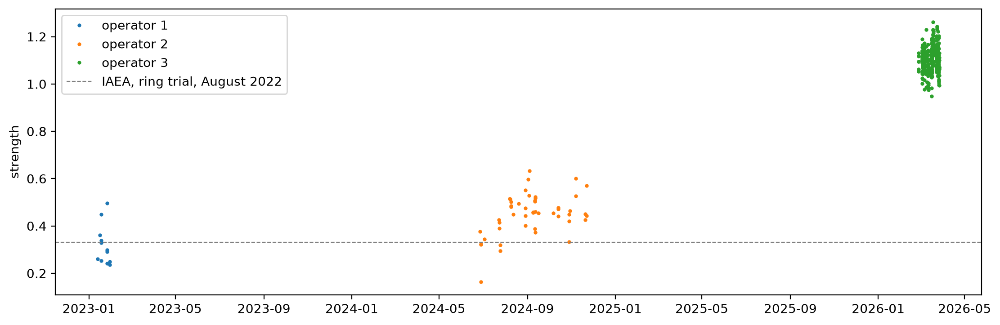

The broad shift of the IAEA Thermo spectra: its shape, how it varies between operators, whether it harms the predictions, and whether removing it helps
/Users/franckalbinet/aai-ws/.venv/lib/python3.13/site-packages/torch/jit/_script.py:1491: FutureWarning: `torch.jit.script` is deprecated. Please switch to `torch.compile` or `torch.export`.
warnings.warn(
The cells that read the Fukushima data are marked #| fukudata and #| rtdata, because they read the Fukushima data and the ring trial. The outputs on this page come from a local run.
After SNV, the Thermo spectra of the Fukushima soils are higher than their OSSL analogues at 2800–3700 cm⁻¹ and lower below 2000 cm⁻¹ (16_moisture). ossl-rt-transfer/10_where_it_fails found the same shift in the ring-trial scans of the IAEA Nicolet, on soils that Woodwell prepared centrally, and on almost every soil. This notebook measures the shift on the Fukushima soils that both instruments scanned, finds what its strength depends on, and tests whether it harms the predictions and whether removing it helps.
The OSSL models also fail on the Bruker spectra of the same soils (05_paired). A correction of the Thermo spectra can therefore at most bring the predictions to the Bruker level. The tests report that ceiling.
The artefact
All spectra on the 2 cm⁻¹ grid from 650 to 3996 cm⁻¹, the range of the Bruker exports, with SNV. The artefact profile is the mean difference between the Thermo and Bruker spectra of the same soils, and the ring-trial profile the mean difference between the IAEA and KSSL spectra of the 70 ring-trial soils:
The strength of the artefact in a scan is the least-squares coefficient of its difference from the Bruker spectrum of the same soil on the profile p_tb, so the mean strength over the paired soils is 1. The strength of each replicate, against the mean Bruker spectrum of its soil, splits the variation into a part within samples, from loading the cup, and a part between samples:
within samples 0.0029
between samples 0.0667
Name: variance, dtype: float64
sample_batches numbers the folders of the Thermo files, one per operator: batch 1 is operator 1’s, batch 2 operator 2’s and batch 3 operator 3’s. The strength by batch, by year of sampling and by soil type, and its Spearman correlation with soil properties. The ring-trial strength uses the same profile:
ops = {'batch 1': 'operator 1', 'batch 2': 'operator 2', 'batch 3': 'operator 3'}meta = pd.DataFrame({'strength': s, 'operator': pd.Series(sample_batches(pids)).map(ops).values}, index=pids).join(th.source.reindex(pids)[['year', 'Soil_type_describe', 'soil_C', 'soil_CEC', 'clay']])display(pd.concat({g: meta.groupby(g).strength.agg(['count', 'mean', 'std']) for g in ['operator', 'year']}).round(3))s_ring = D_rt @ p_tb / (p_tb @ p_tb)pd.Series({**{f'ρ with {c}': spearmanr(meta.strength, pd.to_numeric(meta[c], errors='coerce'), nan_policy='omit')[0] for c in ['soil_C', 'soil_CEC', 'clay']},'ring trial, IAEA, mean strength': s_ring.mean()}).round(3)
count
mean
std
operator
operator 1
12
0.317
0.084
operator 2
48
0.450
0.087
operator 3
316
1.109
0.057
year
2016.0
14
0.469
0.060
2017.0
12
0.480
0.075
2018.0
12
0.317
0.084
2019.0
11
0.490
0.053
2020.0
11
0.353
0.089
2022.0
161
1.092
0.051
2023.0
155
1.128
0.056
ρ with soil_C -0.143
ρ with soil_CEC 0.010
ρ with clay 0.084
ring trial, IAEA, mean strength 0.332
dtype: float64
The projection of the Thermo and Bruker spectra on the profile, by operator, shows on which side the difference between operators lies:
A colleague who measured cassava plants on a similar set-up found that opening the sample chamber from above moved the mirrors, so that the alignment changed between batches. If this happened here, the strength should change between measurement sessions and stay stable within one.
spa_time reads the acquisition time from a Thermo .spa file, stored at byte 296 as seconds since 31 December 1899, the layout that common .spa readers use. The file modification times only record when the files were copied, in October 2026:
import struct, datetimedef spa_time(fn):"Acquisition time of the Thermo `.spa` file `fn`"withopen(fn, 'rb') as f: f.seek(296)return datetime.datetime(1899, 12, 31) + datetime.timedelta(seconds=struct.unpack('<I', f.read(4))[0])
The mean strength of the paired soils by scan day, with the standard deviation within each day:
meta['day'] = [spa_time(spa_files()[i][0]).date() for i in meta.index]display(meta.groupby('operator').day.agg(['min', 'max']))days = meta.groupby(['operator', 'day']).strength.agg(['count', 'mean', 'std'])days.round(3)
min
max
operator
operator 1
2023-01-13
2023-01-30
operator 2
2024-06-27
2024-11-22
operator 3
2026-02-26
2026-03-27
count
mean
std
operator
day
operator 1
2023-01-13
1
0.260
NaN
2023-01-16
1
0.362
NaN
2023-01-18
4
0.343
0.080
2023-01-26
4
0.332
0.112
2023-01-30
2
0.242
0.010
operator 2
2024-06-27
1
0.376
NaN
2024-06-28
3
0.269
0.091
2024-07-03
1
0.344
NaN
2024-07-23
1
0.426
NaN
2024-07-24
2
0.402
0.017
2024-07-25
2
0.307
0.018
2024-08-07
1
0.515
NaN
2024-08-08
1
0.512
NaN
2024-08-09
3
0.490
0.011
2024-08-12
1
0.449
NaN
2024-08-20
1
0.495
NaN
2024-08-29
4
0.467
0.064
2024-09-02
1
0.597
NaN
2024-09-03
1
0.529
NaN
2024-09-04
1
0.632
NaN
2024-09-09
2
0.457
0.002
2024-09-11
3
0.467
0.068
2024-09-12
4
0.468
0.069
2024-09-16
1
0.455
NaN
2024-10-07
1
0.455
NaN
2024-10-14
3
0.464
0.019
2024-10-29
3
0.400
0.060
2024-10-30
1
0.464
NaN
2024-11-07
2
0.563
0.052
2024-11-20
2
0.439
0.017
2024-11-22
2
0.507
0.089
operator 3
2026-02-26
6
1.092
0.030
2026-03-03
21
1.103
0.046
2026-03-04
11
1.091
0.050
2026-03-05
10
1.122
0.031
2026-03-06
17
1.096
0.051
2026-03-09
18
1.092
0.054
2026-03-10
11
1.070
0.045
2026-03-11
23
1.076
0.048
2026-03-12
8
1.045
0.054
2026-03-16
33
1.100
0.056
2026-03-17
23
1.112
0.045
2026-03-18
20
1.172
0.042
2026-03-19
20
1.164
0.039
2026-03-23
29
1.114
0.041
2026-03-24
23
1.154
0.046
2026-03-25
19
1.113
0.058
2026-03-26
15
1.085
0.071
2026-03-27
9
1.072
0.041
fig, ax = plt.subplots(figsize=(11, 3.5), layout='constrained')for o, d in meta.groupby('operator'): ax.plot(pd.to_datetime(d.day), d.strength, '.', ms=4, label=o)ax.axhline(s_ring.mean(), c='grey', ls='--', lw=0.8, label='IAEA, ring trial, August 2022')ax.set_ylabel('strength'); ax.legend();

The 1,389 samples used for modelling come from operator 1’s and operator 2’s folders only:
The 1,389 modelling samples have no Bruker spectra. Their projection on the profile mixes the artefact with differences between soils, but its mean over a month of scans follows the artefact:
month = pd.Series([spa_time(spa_files()[i][0]).strftime('%Y-%m') for i in ids])pd.DataFrame({'operator': op_f, 'month': month, 'projection': proj(snv(fuku.spectra[:, np.isin(shared_wns, pw)]))}).groupby(['operator', 'month']).projection.agg(['count', 'mean', 'std']).round(3)
count
mean
std
operator
month
operator 1
2022-12
143
-0.238
0.128
2023-01
211
-0.245
0.101
2023-02
165
-0.303
0.089
2023-03
16
-0.313
0.075
operator 2
2024-06
27
-0.340
0.170
2024-07
57
-0.284
0.114
2024-08
202
-0.132
0.105
2024-09
189
-0.152
0.087
2024-10
64
-0.151
0.079
2024-11
129
-0.147
0.095
2024-12
113
-0.180
0.092
2025-01
73
-0.192
0.083
Harm to transfer from OSSL
The artefact added to 2,000 OSSL validation spectra, after SNV and before the derivative, at the mean strength of each operator. The models are the OSSL Kex and CEC models of 03_kex and 04_cec, on log1p of the property:
pipe = preprocessings()['snv_d1']deriv = pipe.named_steps['deriv']pad =lambda A: np.c_[A, A[:, -1:]]p_full = pad(p_tb[None])[0]om = load_ossl().mir(wmin=shared_wns[0], wmax=shared_wns[-1])models = {'Kex': load_pretrained('ossl_kex_snv_d1'), 'CEC': load_pretrained('ossl_cec_snv_d1')}cols = {'Kex': 'k.ext_usda.a725_cmolc.kg', 'CEC': 'cec_usda.a723_cmolc.kg'}s_op = meta.groupby('operator').strength.mean()def pred(m, S): return predict(models[m], deriv.transform(S), shared_wns).ravel()rows = {}for m, c in cols.items(): Xo, yo, _ = om.xy(c) yo = np.log1p(yo.ravel()) vs = np.random.default_rng(0).choice(get_splitter(0.9, 0.1, seed=42)(Xo, yo)[1], 2000, replace=False) So, yv = snv(Xo[vs]), yo[vs] p0 = pred(m, So)for k, a in {'none': 0, **s_op}.items(): p = pred(m, So + a * p_full) rows[m, k] = {'strength': a, **regression_scores(yv, p), 'RMS change': np.sqrt(((p - p0)**2).mean())}pd.DataFrame(rows).T[['strength', 'R²', 'r', 'RMS change']].astype(float).round(3)
strength
R²
r
RMS change
Kex
none
0.000
0.797
0.893
0.000
operator 1
0.317
0.691
0.840
0.126
operator 2
0.450
0.605
0.791
0.168
operator 3
1.109
0.290
0.581
0.269
CEC
none
0.000
0.962
0.981
0.000
operator 1
0.317
0.940
0.973
0.139
operator 2
0.450
0.924
0.966
0.181
operator 3
1.109
0.819
0.906
0.336
Removing the artefact
First on the ring trial, where the soils are the same on both instruments: the IAEA profile is estimated on half of the soils and removed from the IAEA spectra of the other half. The zero-shot K predictions are compared with the KSSL predictions and with the measured K:
half = np.random.default_rng(0).permutation(len(rt_ids))fit_h, test_h = half[:35], half[35:]yK = np.log1p(rt['IAEA_aug2022'].source.reindex(rt_ids)['potassium_cmolkg'].to_numpy(dtype=float))cases = {'KSSL': snv(Rks), 'IAEA': snv(Ria), 'IAEA, artefact removed': snv(Ria) - D_rt[fit_h].mean(0)}pk = {k: pred('Kex', pad(S))[test_h] for k, S in cases.items()}ok = np.isfinite(yK[test_h])pd.DataFrame({k: {'r with K': np.corrcoef(p[ok], yK[test_h][ok])[0, 1], 'bias': (p[ok] - yK[test_h][ok]).mean(),'RMS from KSSL': np.sqrt(((p - pk['KSSL'])**2).mean())} for k, p in pk.items()}).T.round(3)
r with K
bias
RMS from KSSL
KSSL
0.763
0.084
0.000
IAEA
0.620
0.380
0.374
IAEA, artefact removed
0.657
0.135
0.262
Then on the Fukushima spectra. On the paired soils, each Thermo spectrum loses its own strength times the profile, which uses the Bruker spectrum of the same soil, so it is the best case. On the 1,389 modelling samples, each spectrum loses the mean strength of its operator:
srcP = th.source.reindex(pids)yP = {'Kex': np.log1p(srcP['soil_ex_K2O'].to_numpy(dtype=float) / mg_k2o_per_cmolc), 'CEC': np.log1p(srcP['soil_CEC'].to_numpy(dtype=float))}src = fuku.source.reindex(ids)yF = {'Kex': np.log1p(src['soil_ex_K2O'].to_numpy(dtype=float) / mg_k2o_per_cmolc), 'CEC': np.log1p(src['soil_CEC'].to_numpy(dtype=float))}SF = snv(fuku.spectra)def zs(m, S, y): p, ok = pred(m, S), np.isfinite(y) sc = regression_scores(y[ok], p[ok])return {'R²': sc['R²'], 'r': sc['r'], 'bias': (p[ok] - y[ok]).mean()}St, Sb = pad(snv(th.spectra)), pad(snv(br.spectra))paired = {'Thermo': St, 'Thermo, artefact removed': St - s[:, None] * p_full, 'Bruker, the ceiling': Sb}modelling = {'Thermo': SF, 'Thermo, artefact removed': SF - s_op.reindex(op_f).to_numpy()[:, None] * p_full}pd.concat({'paired soils': pd.DataFrame({(m, k): zs(m, S, yP[m]) for m in models for k, S in paired.items()}).T,'modelling samples': pd.DataFrame({(m, k): zs(m, S, yF[m]) for m in models for k, S in modelling.items()}).T}).round(3)
R²
r
bias
paired soils
Kex
Thermo
-0.920
0.152
0.220
Thermo, artefact removed
-0.130
0.240
0.053
Bruker, the ceiling
-0.729
0.193
0.122
CEC
Thermo
-0.508
0.527
0.213
Thermo, artefact removed
0.020
0.497
0.035
Bruker, the ceiling
0.242
0.656
0.093
modelling samples
Kex
Thermo
-0.763
0.154
0.179
Thermo, artefact removed
-0.604
0.096
0.115
CEC
Thermo
-0.673
0.625
-0.207
Thermo, artefact removed
-0.887
0.632
-0.265
Harm to models trained on Fukushima
A shift shared by all scans cannot harm a model trained on those scans. Only its variation between scans can. Ridge regression on the spectra after SNV and the first derivative, and on block 4 of the OSSL Kex and CEC models as in 20_grouped_cv, with folds grouped by field. The spectra are used as measured, with the artefact direction projected out, and with each operator’s mean spectrum removed:
ratio = pd.concat([pd.read_csv(fuku_path()/'reference'/f'cs137_ratio_{s}.csv', usecols=['ID', 'exCs137_totalCs137']) for s in ('train', 'test')])ratio = ratio.assign(ID=ratio.ID.astype(str)).set_index('ID')['exCs137_totalCs137']targets = {'Kex': yF['Kex'], 'Cs-137 ratio': ratio.reindex(ids).to_numpy()}fields = src['field_no'].astype(str).to_numpy()Xd = deriv.transform(SF)v = deriv.transform(p_full[None])[0]Xs = {'as measured': Xd, 'artefact direction removed': epo_project(Xd, (v / np.linalg.norm(v))[:, None]),'operator mean removed': Xd - pd.DataFrame(Xd).groupby(op_f).transform('mean').to_numpy() + Xd.mean(0)}def b4(X): return np.hstack([layer_features(load_pretrained(n), X)['block 4'] for n in ('ossl_kex_snv_d1', 'ossl_cec_snv_d1')])feats = {('spectra', k): X for k, X in Xs.items()} | {('block 4', 'as measured'): b4(Xd), ('block 4', 'artefact removed'): b4(deriv.transform(modelling['Thermo, artefact removed']))}ridge = (make_pipeline(StandardScaler(), Ridge()), {'ridge__alpha': np.logspace(-1, 6, 15)})import warningsfrom scipy.linalg import LinAlgWarningwarnings.simplefilter('ignore', LinAlgWarning)oof, res = {}, {}for t, y in targets.items(): ok = np.isfinite(y)for k, X in feats.items(): p = np.full(len(y), np.nan) p[ok], _ = oof_preds(*ridge, X[ok], y[ok], group_folds(fields[ok]), fields[ok]) oof[(t, *k)], res[(t, *k)] = p, regression_scores(y[ok], p[ok])pd.DataFrame(res).T[['R²', 'r', 'RMSE']].round(3)
R²
r
RMSE
Kex
spectra
as measured
0.279
0.535
0.198
artefact direction removed
0.272
0.529
0.199
operator mean removed
0.265
0.521
0.200
block 4
as measured
0.264
0.518
0.200
artefact removed
0.266
0.521
0.200
Cs-137 ratio
spectra
as measured
0.524
0.724
0.241
artefact direction removed
0.511
0.715
0.245
operator mean removed
0.513
0.717
0.244
block 4
as measured
0.571
0.756
0.229
artefact removed
0.564
0.752
0.231
The mean out-of-fold residual of ridge on the spectra, by operator:
pd.DataFrame({t: pd.Series(targets[t] - oof[t, 'spectra', 'as measured']).groupby(op_f).mean() for t in targets}).round(3)
Kex
Cs-137 ratio
operator 1
-0.001
0.003
operator 2
-0.002
0.001
Findings
The artefact has one shape in both datasets. After SNV, the Thermo spectra of the 376 paired soils are higher than their Bruker spectra at 2800–3700 cm⁻¹ and lower below 1650 cm⁻¹, including the H–O–H bending band. Its profile correlates at 0.87 with the IAEA − KSSL profile of the ring-trial soils, which Woodwell prepared centrally. The Fukushima profile is about twice as large at 2800–3700 cm⁻¹ and four times as large at 650–1300 cm⁻¹.
Its strength depends on the operator, not on the soil. With the mean over the paired soils set to 1, operator 1’s scans have a strength of 0.32 and operator 2’s 0.45, close to IAEA’s ring-trial scans of August 2022 (0.33). Operator 3’s scans of the 2022 and 2023 samples have 1.11, about three times as much. Within each operator the standard deviation is 0.06 to 0.09. The replicates of one sample barely differ (variance 0.003, against 0.067 between samples), so the cause is not how each replicate was loaded. Soil carbon, CEC and clay barely relate to the strength (Spearman −0.14 to 0.08). The Bruker spectra project on the profile alike for all three operators (−0.51 to −0.57), so the change between operators lies in the Thermo scans. Something in the measurement changed between the earlier sessions and operator 3’s: the procedure, the drying or storage of the samples, or the state of the instrument.
The strength follows the scan date, by session. Operator 1 scanned in December 2022 to March 2023, operator 2 in June 2024 to January 2025, and operator 3 in February and March 2026, after IAEA’s ring-trial scans of August 2022. On the paired soils, the daily mean strength is 0.24 to 0.36 in January 2023, and 0.27 to 0.43 for operator 2 in June and July 2024. From 7 August 2024 it is 0.40 to 0.63. Operator 3’s daily means are 1.04 to 1.17, with a standard deviation of 0.03 to 0.07 within each day. The modelling spectra show the same step: their mean projection on the profile is −0.24 to −0.31 for operator 1’s months, −0.34 and −0.28 for June and July 2024, and −0.13 to −0.19 from August 2024 to January 2025. So the measurement changed at least twice: between July and August 2024, and between January 2025 and February 2026. Small steps between operator 3’s days fit a set-up that changes from session to session, such as mirrors that move when the chamber is opened, as a colleague found on another instrument. The data cannot tell that cause from others, such as drift of the source or detector, a change of accessory, or a change in how the samples were dried or stored before scanning.
Operator 3’s samples are not among the 1,389 used for modelling, which are operator 1’s (535) and operator 2’s (854). They make up 316 of the 376 paired soils, so the paired comparisons of 05_paired and 16_moisture describe mostly the strongest artefact.
The artefact harms transfer from OSSL, but does not explain the failure. Added to OSSL validation spectra at operator 1’s and operator 2’s strengths, it lowers the R² of the OSSL Kex model from 0.80 to 0.69 and 0.61, and its correlation from 0.89 to 0.84 and 0.79. CEC loses less: R² from 0.96 to 0.94 and 0.92. The zero-shot Kex correlation on the Fukushima spectra is 0.15, far below what the artefact alone leaves.
Removing the artefact corrects the bias, not the ranking. On the ring trial, removing IAEA’s mean profile, estimated on other soils, cuts the bias of the K predictions from 0.38 to 0.14, and their distance from the KSSL predictions from 0.37 to 0.26. Their correlation with K rises from 0.62 to 0.66, against 0.76 on KSSL. On the paired Fukushima soils, the best case, the bias falls for both properties, but the CEC correlation stays at 0.50, below the Bruker ceiling of 0.66. On the modelling samples, the zero-shot correlation does not improve: 0.15 to 0.10 for Kex, 0.63 for CEC.
The artefact does not harm models trained on Fukushima. On folds grouped by field, removing the artefact direction or each operator’s mean spectrum changes R² by at most 0.014, for Kex and the Cs-137 ratio, on the spectra and on block 4 of the OSSL models. The residuals average −0.002 to 0.003 for both operators.
External parameter orthogonalisation with the ring-trial IAEA–KSSL pairs, followed by ridge trained on OSSL, was tried in the kernel, not in this notebook. As in 13_epo, ridge trained on OSSL derivative spectra does not transfer zero-shot (R² down to −27), so its results say nothing about the correction.